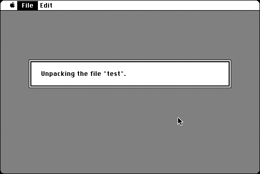

Download
unpit0.1.zip (12K) Unpit 0.1 -- August 1, 1986 repackaged into a zipped hfs disk image and checksum file. The disk image can be mounted with Mini vMac.
unpit0.1.hqx (25K) Unpit 0.1 -- August 1, 1986 in the original format.
copyright: Thomas D. Newton
mod date: Aug 19, 1986
license: freeware
Unpacks PackIt files, and is freeware (instead of shareware, which PackIt is). A Macintosh translation of the Unix program “unpit” by Allan G. Weber. Source code is available (below).

Download Source
unpitsource.zip (25K) Unpit Source repackaged into a zipped hfs disk image and checksum file. The disk image can be mounted with Mini vMac.
unpitsource.cpt.hqx (29K) Unpit Source in the original format.
If you find these downloads useful, please consider helping the Gryphel Project, which hosts them.
Here are the md5 checksums for the downloads, signed with Gryphel Key 5:
--------- GRY SIGNED TEXT --------- f8576e82c389221fdd7e135f636e0515 unpit0.1.zip 89beacdceefe02777a7deee10958a590 unpit0.1.hqx db32ee2e0907f92ee56a77dbd4b1d1a8 unpitsource.zip 47db185cbede141caab4dd0251a741e8 unpitsource.cpt.hqx ------- BEGIN GRY SIGNATURE ------- Gry/4Xa8CFcUzxdN/PAwfskLR+7MtUrAWdOx5X7tPSaxrnHJ48VCyBLE2f4nOkw+ djya+4oHre29MTC8Udlen00xV+H2oWdaRWIhaRwAizAFsXc/O48szsTfI+iCtv2c 9sGhpHkGxiTSa1dJy03M90SMOtx6DdqcrYpAxHFr2KAgP3PjY1/zN78tMASuEIwX -------- END GRY SIGNATURE --------